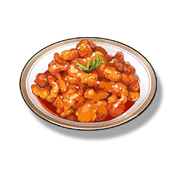

Sweet & Sour Pork
Supplies

Increase the attack of all Resonators in the team by 135 points and 12% critical strike, lasting 30 minutes, only effective for your own Character in multiplayer games.
One of the must-have dishes at the Huanglong New Year's feast. Because of its sour, sweet, and crispy taste, it is popular with children and is also known as "Kid's Delight" by the people. Perhaps the most genuine smile that children show when they taste the sweetness is a taste of happiness that is more than the dish itself.